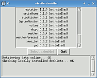

aDesklets
Archivierte Anleitung
Dieser Artikel wurde archiviert, da er - oder Teile daraus - nur noch unter einer älteren Ubuntu-Version nutzbar ist. Diese Anleitung wird vom Wiki-Team weder auf Richtigkeit überprüft noch anderweitig gepflegt. Zusätzlich wurde der Artikel für weitere Änderungen gesperrt.
Zum Verständnis dieses Artikels sind folgende Seiten hilfreich:
| Desktop mit verschiedenen Desklets |
adesklets  steht für "a(nother) desklets (container)" und stellt kleine Miniprogramme für den Desktop bereit. Es eignet sich besonders für den Einsatz unter leichtgewichtigen Fenstermanagern wie Fluxbox, Openbox, IceWM und anderen. Ein erster Eindruck, was damit möglich ist, kann mit diesen Bildern gewonnen werden.
steht für "a(nother) desklets (container)" und stellt kleine Miniprogramme für den Desktop bereit. Es eignet sich besonders für den Einsatz unter leichtgewichtigen Fenstermanagern wie Fluxbox, Openbox, IceWM und anderen. Ein erster Eindruck, was damit möglich ist, kann mit diesen Bildern gewonnen werden.
Bisher sind nur Desklets auf Basis von Python vorhanden, die aber die meisten klassischen Anwendungsbereiche abdecken:
Uhren
Kalender
Wetteranzeige
RSS-Feed Anzeige
Steuerung von Audioplayern wie XMMS und MPD (Music Player Daemon)
Animierte Leisten
Notizzettel
Systemzustandsanzeigen
Heutzutage muss sich adesklets mit einer großen Anzahl anderer Desklets messen. Trotzdem hat das Programm seinen Charme nicht verloren, wenn man eigene Wege abseits der Mainstream-Desktop-Umgebungen gehen möchte.
Hinweis:
Die Transparenz der Desklets funktioniert nur beim Einsatz eines Composite-Managers.
Installation¶
 Adesklets befindet sich bis Ubuntu 11.04 in den offiziellen Paketquellen. Zur Installation [1] sind folgende Pakete notwendig:
Adesklets befindet sich bis Ubuntu 11.04 in den offiziellen Paketquellen. Zur Installation [1] sind folgende Pakete notwendig:
adesklets (universe)
python-tk
Benutzung¶
Um den adesklets-Daemon zu starten, einfach den Menü-Eintrag "Anwendungen -> Zubehör -> adesklets" ausführen und ggf. in den Autostart [2] aufnehmen, um ihn beim Systemstart mit zu starten.
Bevor ein Desklet gestartet wird, sollte vorher die Datei README im Ordner des Desklets gelesen und eventuelle Abhängigkeiten erfüllt werden. Um das Desklet zu starten, öffnet ein Terminal [3], wechselt man in den Ordner, in dem sich das Desklet befindet und führt folgenden Befehl aus:
./[desklet_name].py
Nur unter GNOME bzw. Nautilus wird noch ein Zusatz angefügt:
./[desklet_name].py --nautilus
Jetzt erscheint eine Meldung, ob das Desklet registriert (r) oder getestet (t) werden soll. Registrieren heißt, dass das Desklet beim Start des adesklets-Daemons automatisch gestartet wird. Ansonsten wird es im Testmodus gestartet.
Hinweis:
Um ein Desklet korrekt zu registrieren, darf man es nicht mit einem Befehl wie python [desklet_name].py starten! Es startet dann immer im Testmodus (egal, ob man nun r oder t eingegeben hat).

Weitere Desklets installieren¶
Weitere Desklets lassen sich über eine grafische Oberfläche installieren (siehe Bild), die man durch folgenden Befehl im Terminal startet:
adesklets -i
Manchmal dauert das Herunterladen sehr lange. Alternativ kann man die Desklets der offiziellen Liste manuell herunterladen und in den versteckten Ordner ~/.desklets entpacken [4]. Auch auf Gnome-look.org lassen sich einige wenige Desklets finden.
 Übersichtsseite
Übersichtsseite- Erstellt mit Inyoka
-
 2004 – 2017 ubuntuusers.de • Einige Rechte vorbehalten
2004 – 2017 ubuntuusers.de • Einige Rechte vorbehalten
Lizenz • Kontakt • Datenschutz • Impressum • Serverstatus -
Serverhousing gespendet von